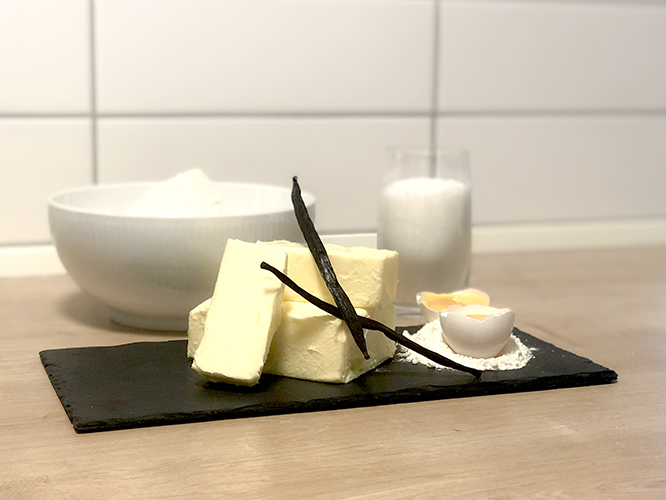

SÅDAN GØR DU
- Æg og sukker piskes til jævn masse, melet og bagepulver kommes i.
- Mælk og margarine koges op og kommes varm i dejen.
- Dejen køres gennem kødmaskinen med skiven med stjernemønster.
- Formes til kranse, der sættes på en bageplade med bagepapir.

Ingredienser til glasur:
125 g smør
125 g kokosmel
250 g brun farin
½ dl mælk
Fremgangsmåde:
1. Det hele varmes sammen
2. Kommes på kagen når den er bagt
3. Bages derefter nogle 5-10 min. med massen på.